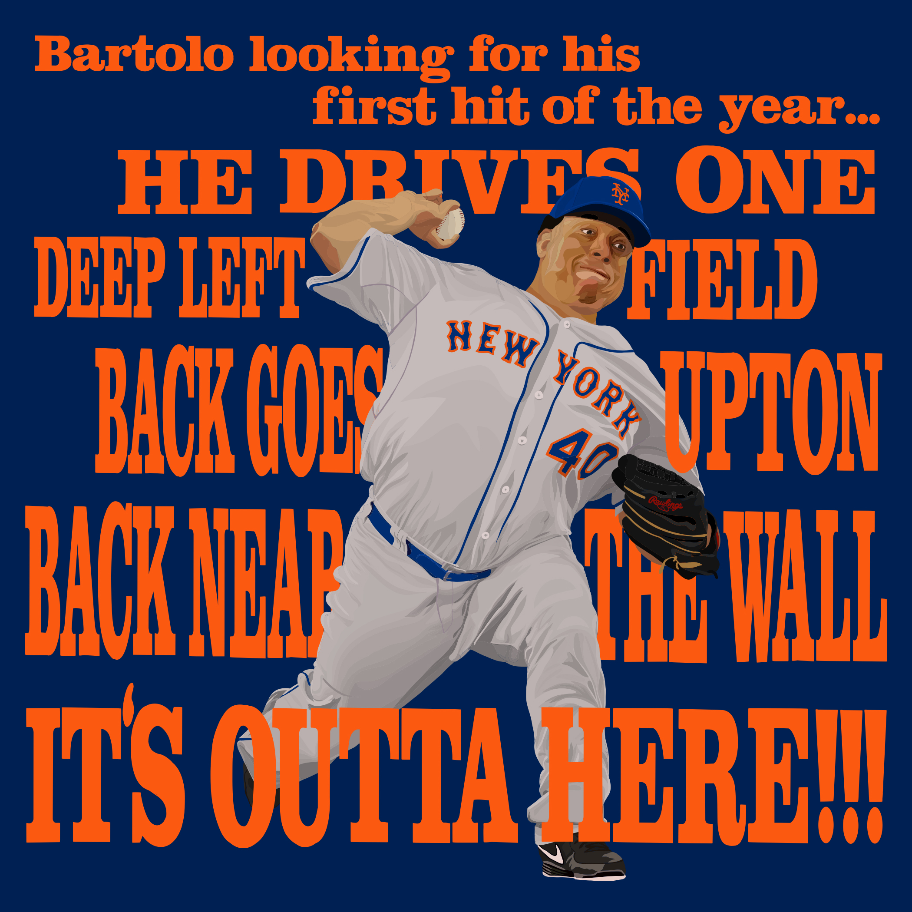
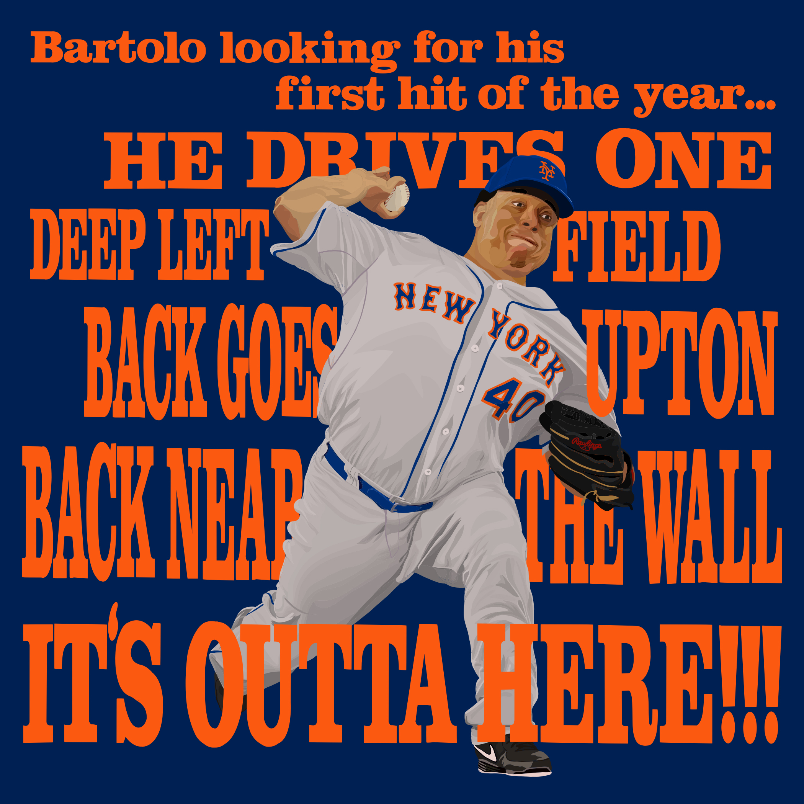

Graphic Design
Like I mention in my bio, one of my favorite personal hobbies is graphic design. I started with a lightboard and pictures of my favorite soccer players in the back of my mother's minivan during roadtrips. It has always been an artistic outlet for me. I now draw athletes on my ipad, getting lost in process drawing for hours. My collection includes football, soccer, golf, baseball, and soccer players. Mostly my favorite players, but I also draw people on my fantasy sports teams as well as players for my friends.
Baltimore Ravens
The Ravens are my favorite team in any sport. I fell in love with the team in the early 2010s because of their purple and gold color scheme and then they won the 2013 Superbowl and I was locked in for life. My collection of Ravens' players includes MVP Lamar Jackson, Hollywood Brown, Marlon Humphrey, JK Dobbins, Odafe Oweh, and Gus Edwards. I love this collection so much that they are on a poster in my room.


Football
No suprise that with my love of the ravens, I watch a lot of football. I have also drawn a number of playres for other teams. A lot of the players have been on my fantasy football teams. My collection of football players includes Justin Jefferson, James Robinson, Deandre Hopkins, Josh Jacobs, the 2018 Bama Team, Chase Young, Dalvin Cook, Tyler Lockett, Saquon Barkley, Michael Thomas, Keenan Allen, and Todd Gurley.


Basketball
I'm not that much of a basketball guy in comparison to other sport, but I have had moments of inspiration. My basketball collection includes Alex English, Donavon Mitchell, Damien Lillard, and Kobe "Bean" Bryant.


Baseball
Baseball is the newest of my sport interest, I didn't really have any interest in baseball till college. Due to my late start with baseball, these drawings are much more recent and are evidentally much higher quality. My baseball collection includes two pictures of Vladdimir Guerrero Jr., one in the classic Blue Jays light blue and the new City Connect uniform, as well as a throwback Boston Red Sox's Mookie Betts.

 


Soccer
Given the time frame of my soccer fandom, one might expect an opposite situation of baseball. Despite playing soccer for most of my childhood, I have a very small soccer collection. I just have never had the urge to draw soccer players in the same way I have to draw football players. My soccer collection includes Weston Mckennie, Cristiano Ronaldo, and Lionel Messi.


Golf
Golf, like baseball, is a realatively new sport in my life so my collection is relatively small. My golf collection is limited to the GOAT Tiger woods and my favorite golfer Justin Thomas.